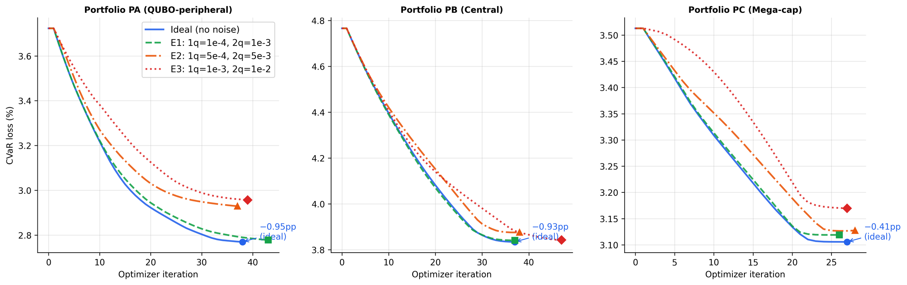
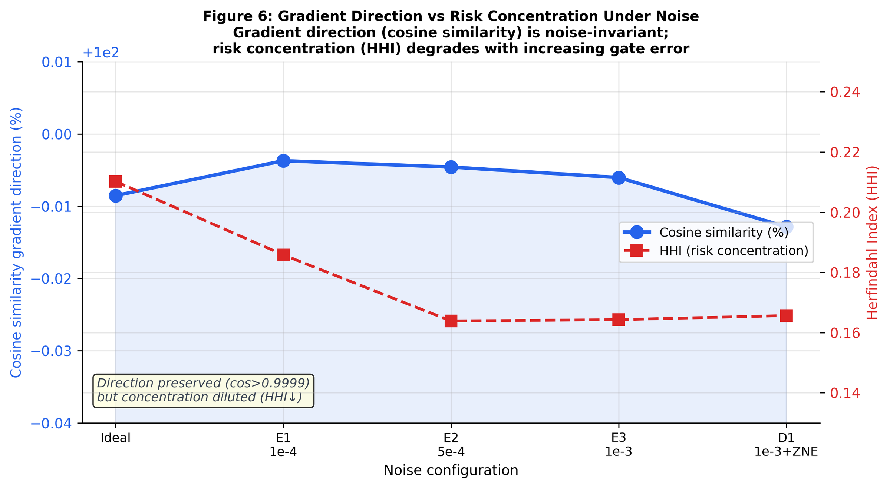
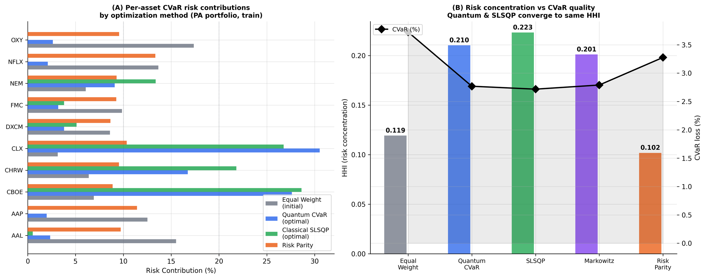
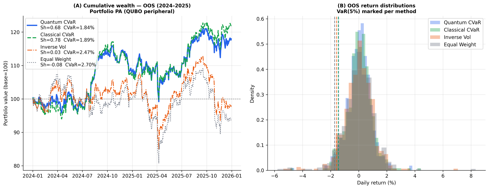
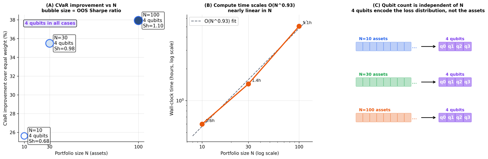

Three portfolios × five noise levels × three portfolio sizes N ∈ {10, 30, 100}. All 46 optimisers converge. All values from the paper — no fabricated data.
All 46 optimisers converge in ≤85 iterations regardless of noise level. Noise shifts the CVaR plateau upward without altering the descent trajectory shape. No divergence or oscillation observed.

Fig. 5 — CVaR loss vs iteration for portfolios PA, PB, PC under noise configs A1 (ideal), E1 (p&sub2;q=10⊃−³), E2 (p&sub2;q=5·10⊃−³), E3 (p&sub2;q=10⊃−²). Convergence shape preserved across all noise levels; only the final CVaR plateau shifts upward.
Counterintuitive finding: hardware noise acts as a scaling distortion, not a directional perturbation. Cosine similarity between quantum and exact classical subgradients exceeds 0.9999 in all 46 experiments, including at 10× the nominal IQM gate error rate.
Config · Noise
Cosine Similarity
CVaR Error
HHI
A1 · ideal
0.999915
0.2102
E1 · 10-3
0.999963
0.1858
E2 · 5·10-3
0.999954
0.1638
E3 · 10-2
0.999940
0.1643
D1 · ZNE
0.999871
0.1656

Fig. 6 — Gradient direction stability (cosine similarity, left axis) and risk concentration (HHI, right axis) as hardware noise increases. Direction is noise-invariant; gradient magnitude contrast (and therefore HHI) degrades monotonically.
414/414 Euler additivity checks pass (|ΣRC_i − CVaR|/CVaR < 10⊃−¹&sup4;). Quantum and SLSQP independently converge to the same risk structure: CLX + CBOE + CHRW absorb 74% of CVaR.
Portfolio PA · Quantum Hybrid (A1_PA) · CVaR&sub0;.&sub0;&sub5; = 0.02768 · HHI = 0.2102 · eff N = 4.76
CLX
30.52%
w=0.279
mCVaR=0.0302
CBOE
27.62%
w=0.290
mCVaR=0.0264
CHRW
16.73%
w=0.178
mCVaR=0.0260
NEM
9.09%
w=0.108
mCVaR=0.0234
DXCM
3.80%
w=0.040
mCVaR=0.0263
FMC
3.18%
w=0.033
mCVaR=0.0266
OXY
2.62%
w=0.016
mCVaR=0.0464
AAL
2.34%
w=0.019
mCVaR=0.0342
NFLX
2.10%
w=0.019
mCVaR=0.0305
AAP
1.98%
w=0.018
mCVaR=0.0304

Fig. 9 — Euler CVaR decomposition for portfolio PA. Left: per-asset risk contributions for four methods. Right: HHI and total CVaR by method. Quantum hybrid and SLSQP converge to HHI≈0.21 and the same top-3 assets.
Quantum CVaR achieves the lowest OOS CVaR (0.01839) of all methods over 501 trading days (2024-01-02 to 2025-12-30). One-sided bootstrap p-value = 0.043 vs classical SLSQP (B=5,000, block=21 days).
0.01839Quantum CVaR
OOS best
0.01887Classical SLSQP
Sharpe 0.783
0.02467Inverse Vol
Sharpe 0.026
0.02703Equal Weight
Sharpe −0.076

Fig. 10 — Comprehensive OOS analysis (501 days, 2024-01-02 to 2025-12-30). Top: cumulative wealth (base 100). Additional panels: underwater chart, rolling 63-day Sharpe, return distributions with VaR lines, all 46 experiments in risk-return space, risk metric comparison, scalability Sharpe.
Fixed 4-qubit circuit for N=10, 30, and 100 assets. Wall-clock time scales as O(N&sup0;·&sup9;³) — near-linear. CVaR improvement and OOS Sharpe ratio both increase with N.
N=10
PA · 4 qubits
IS CVaR Reduction25.6%
OOS CVaR0.01839
OOS Sharpe0.681
HHI0.210
Wall time2,157 s
Oracle queries4.4M
N=30
PA₃₀ · 4 qubits
IS CVaR Reduction35.5%
OOS CVaR0.01927
OOS Sharpe0.979
HHI0.118
Wall time5,173 s
Oracle queries24.1M
N=100
PA₁₀₀ · 4 qubits
IS CVaR Reduction37.9%
OOS CVaR0.01795
OOS Sharpe1.099
HHI0.091
Wall time18,215 s
Oracle queries125.1M

Fig. 12 — Scalability results for portfolio PA with N∈{10,30,100} assets at fixed 4-qubit circuit width. Left: CVaR improvement and OOS Sharpe vs N. Centre: wall-clock time on log-log scale, empirical slope O(N&sup0;·&sup9;³). Right: qubit count is independent of N.
All 46 experiments from the paper appendix. IS = in-sample training period (2020-2023). OOS = out-of-sample (2024-2025).